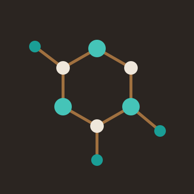

Lyophilization CDMO
Advanced lyophilization and contract manufacturing services
For life-science, diagnostic, biologic and drug-product innovators who need one partner from component washing to labeled, lyophilized product.
A lyophilization-led CDMO
Customer-first manufacturing for products that have to stay stable.
Sublyra Sciences develops and manufactures lyophilized products for companies that cannot afford a failed batch. We wash, sterilize, compound, fill, lyophilize, cap and label at one site, under one quality system, with scientists who answer your questions directly.
Talk to an expert
An end-to-end range of services, from formulation to labeled product, with lyophilization at the center.
Washing
Validated washing of vials, stoppers and components to remove particulates and endotoxin before sterilization.
MoreSterilizing
Dry-heat depyrogenation, steam sterilization and VHP decontamination for components and equipment.
MoreMixing
GMP compounding and sterile filtration of solutions and suspensions from bench scale to production tanks.
MoreFilling
Isolator-based aseptic filling of vials with partial stoppering for lyophilization.
More CoreLyophilization
Cycle development, optimization and GMP lyophilization from pilot lots to commercial batches.
MoreCapping
Full stoppering inside the dryer, then aluminum crimp sealing with 100% container closure inspection.
MoreLabeling
Vial labeling, serialization, cartoning and kit assembly, ready for clinical or commercial distribution.
MoreR&D
Formulation development, feasibility studies and stability programs that get your product ready to lyophilize.
MoreCustom Synthesis
Synthesis of small molecules, peptides, conjugates and reagents to your specification, from milligrams to kilograms.
MoreHow a batch moves
Seven steps, one floor.
Components enter at washing and leave as labeled, released units. R&D and custom synthesis feed the line from the start.
- WashingVials, stoppers
- SterilizingDepyrogenation
- MixingCompounding
- FillingAseptic fill
- LyophilizationPrimary and secondary drying
- CappingSeal and inspect
- LabelingLabel and pack
Why one roof
Fewer handoffs, fewer surprises.
Most lyophilized programs pass through three or four vendors before a vial ships. We built the whole chain in one facility.
One tech transfer
Your process moves once, into one team. The people who develop your cycle are the people who run it at scale.
One quality agreement
A single QA unit owns deviations, change control and batch release across every step, so nothing falls between vendors.
Shorter timelines
No shipping between sites, no waiting on another vendor's schedule. Filled vials go straight from the isolator into the lyophilizer.
Contact
Speak with one of our experts.
Share your formulation and timeline. We'll map the steps and cost with you.
FAQ
Frequently asked questions
Does my product need to be lyophilized?
Lyophilization suits products that lose activity in liquid form, such as proteins, enzymes, vaccines, diagnostic reagents and some small molecules. Removing water stops most degradation and often lets the product ship and store at room temperature. Our R&D team can run a short feasibility study to tell you whether the gain in stability is worth the added step.
What do you need from us to start cycle development?
A formulation, a target fill volume and container, and any stability data you have. We measure the collapse and glass transition temperatures, then design a cycle that keeps the product below them with a safety margin.
How long does a lyophilization cycle take?
Most cycles run 24 to 72 hours, depending on fill depth, solids content and the formulation's collapse temperature. Cycle optimization often removes many hours from a first-pass recipe without risking the cake.
Can you take over a cycle developed somewhere else?
Yes. We review your existing recipe and data, run engineering batches on our equipment, and adjust for differences in shelf heat transfer and condenser capacity before any GMP batch.
Do you handle small clinical batches as well as commercial runs?
Our pilot lyophilizer covers development and early clinical lots, and our production units cover larger clinical and commercial batches. The same team and quality system support both, so scale-up stays in house.
Find us
Headquartered in Anytown, California
Sublyra Sciences works as an extension of your team. We take on the lyophilization and fill-finish steps that are hardest to get right, lower the risk in your program and help you reach the market on time.
Talk to an expertAccreditations
- cGMP
- ISO 13485
- FDA registered
Address
1200 Example Way, Suite 100
Anytown, CA 90000